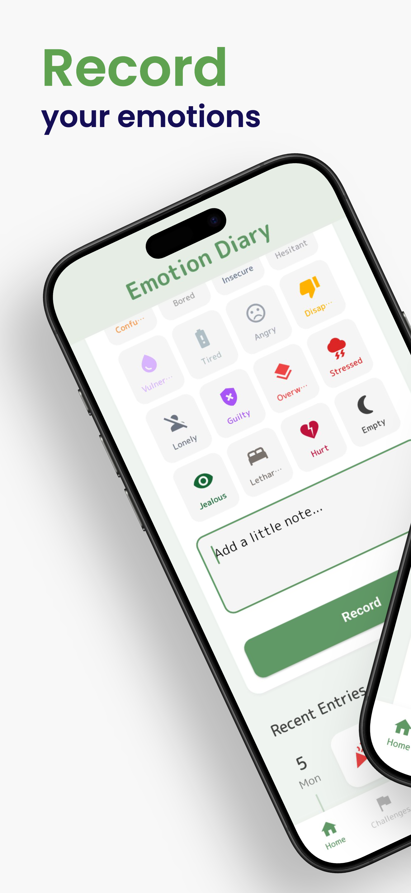
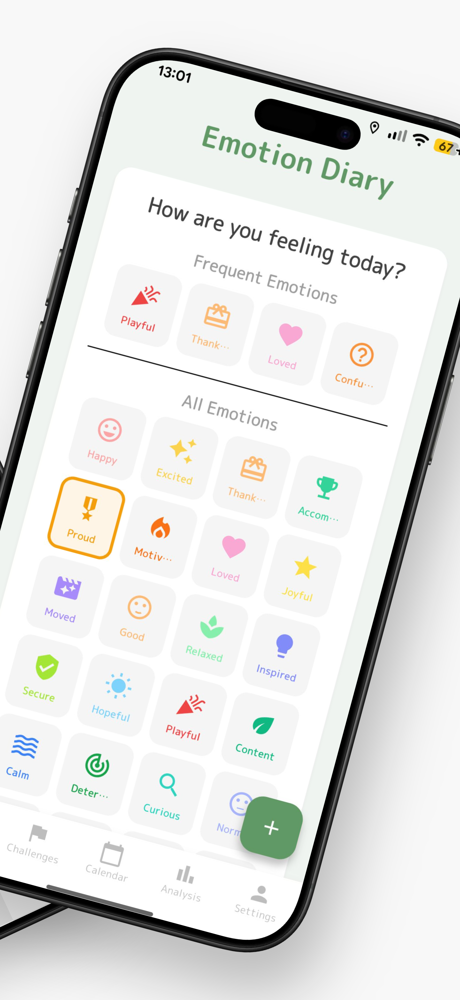
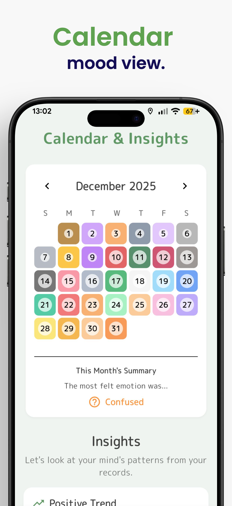
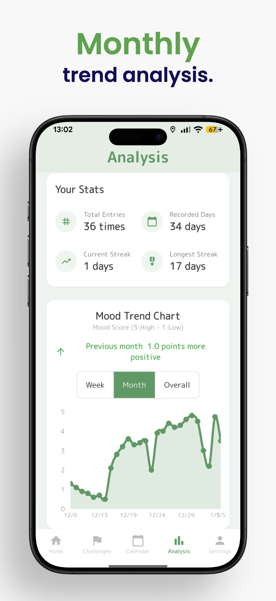
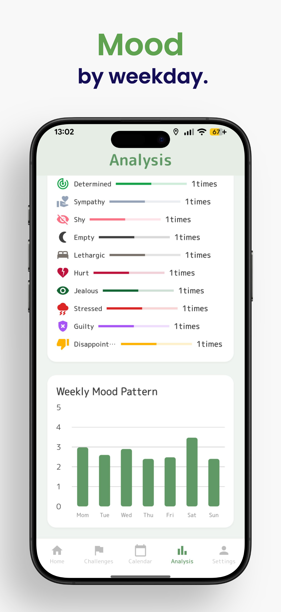
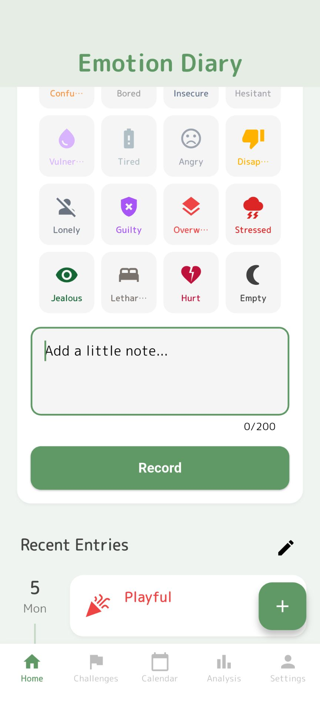
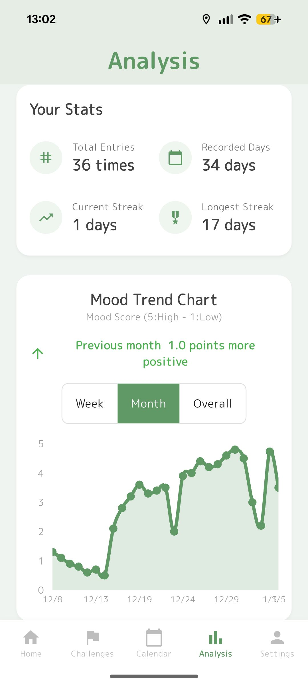
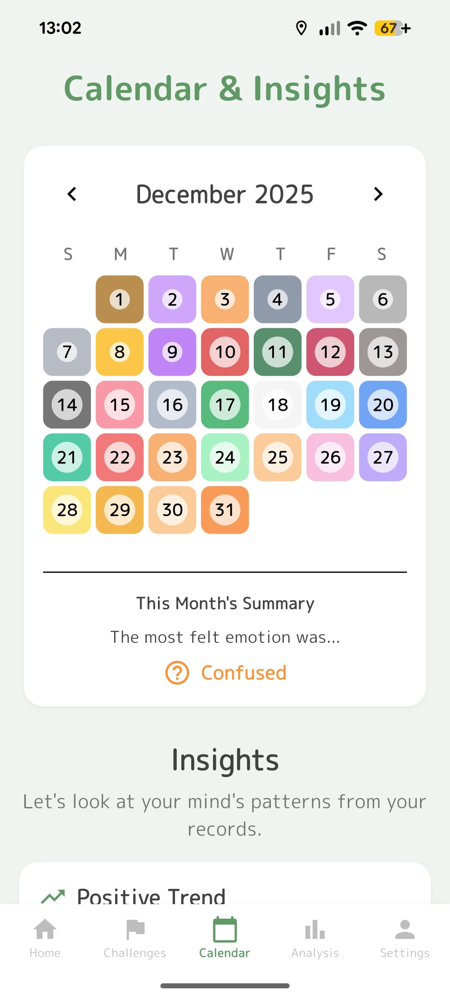
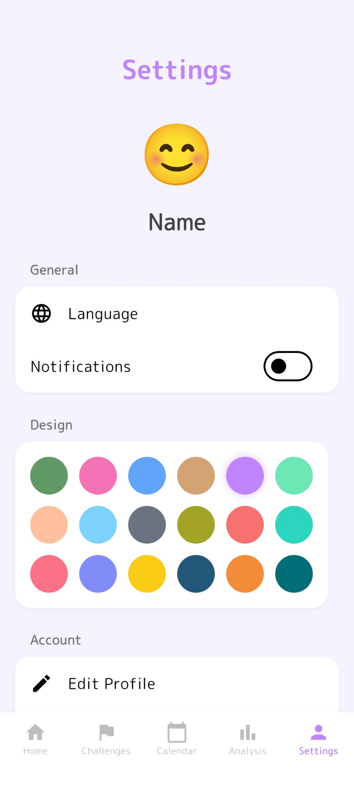

新しいライフログ体験
日々の感情を記録し、自分をもっと大切に。
「Emotion Diary」は、日々の感情を繊細に記録し、心の動きを可視化することでメンタルヘルスの向上をサポートするライフログアプリです。

「Emotion Diary」は、日々の感情を繊細に記録し、心の動きを可視化することでメンタルヘルスの向上をサポートするライフログアプリです。
嬉しいこと、悲しいこと、なんとなくモヤモヤすること。
Emotion Diaryは、感情と生活習慣の相関関係を見出し、
あなたがより良い生活を送るための道しるべとなります。
毎日使うものだからこそ、美しさと使いやすさにこだわりました。





「嬉しい」「悲しい」といった大まかな枠組みを超えた、40種類以上のきめ細やかな感情タグを用意。今の気持ちに一番近いものを選べます。


データが蓄積されると、あなたの気分の傾向やパターンが明らかになります。自分を客観的に見つめ直すきっかけを提供します。
日々の記録をカレンダーで一覧。さらに、メンタルを整えるための小さな目標を設定し、達成感を味わうことができます。


18種類の着せ替えテーマやプロフィール設定で、アプリを開くのが楽しみになる日記へ。
Emotion Diaryは、温かみのあるデザインと直感的な操作で、
毎日開きたくなるような没入感を提供します。さあ、今日から記録を始めましょう。